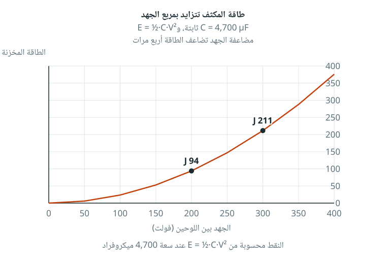

السعة الكهربائية
Capacitance
الشحنة التي يستوعبها موصل عند فرق كمون معلوم، C = Q/V، ووحدتها الفاراد أي كولوم لكل فولت. تعتمد على الهندسة والعازل لا على الشحنة، والطاقة المخزنة تتناسب مع مربع الجهد.
السعة الكهربائية مقدار الشحنة التي يستوعبها موصل عند فرق كمون معلوم: C = Q/V، ووحدتها الفاراد، أي كولوم لكل فولت. مكثف سعته 1 F يحمل 1 C عند 1 V. السعة لا تعتمد على الشحنة بل على الهندسة والعزل: C = ε·A/d للوحين متوازيين، فتزيد بمساحة اللوحين وتنقص بالمسافة بينهما وبثابت عزل المادة الفاصلة.
الشحنة لا تُخزَّن في اللوحين فحسب، بل يُخزَّن معظم الطاقة في المجال الكهربائي بينهما. الطاقة تتناسب مع مربع الجهد لا مع الجهد: مضاعفة الجهد تربّع الطاقة أربع مرات. ولهذا تُبنى مكثفات الجهد العالي بعزل سميك وفاصل رقيق، ويُقاس صبرها بجهد الانهيار لا بالسعة وحدها.
كيف تعمل الظاهرة؟
عند وصل مكثف بمصدر يدفع المصدر إلكترونات إلى لوح ويسحبها من اللوح الآخر، فينشأ مجال كهربائي بين اللوحين يزداد حتى يصبح فرق كمونه مساويًا لجهد المصدر، عندها يتوقف التيار. الزمن الذي يستغرقه ذلك يحدّده ثابت الزمن τ = R·C للدارة: بعد τ واحد تبلغ الشحنة 63% من قيمتها النهائية، وبعد خمسة أمثال τ تبلغ 99%. عند فصل المصدر تبقى الشحنة ويحافظ المجال على الطاقة حتى تتسرّب عبر العازل أو تُفرَّغ في الحمل. العازل نفسه يستقطب: تتحرك شحناته المقيدة قليلًا فتُضعف المجال الداخلي، ولهذا ترفع كل مادة عازلة السعة بمعامل ε_r.
العلاقة بالأرقام
مكثف سعته 4,700 µF مشحون إلى 400 V يخزّن E = ½·C·V² = 376 J، وهي طاقة كافية لرفع كيلوغرام إلى 38 m. ولتصوّر حجم الفاراد: مكثف لوحين متوازيين بمسافة 1 mm في الهواء يحتاج مساحة A = C·d/ε₀ = 1.13×10⁸ m² لسعة 1 F، أي نحو 113 كيلومترًا مربعًا. لهذا تُصنع المكثفات العملية من رقائق معدنية ملفوفة بعازل رقيق، أو من طبقة أكسيد كهركيميائية سماكتها أقل من ميكرومتر، وثابت العزل بين 4 و30 يقلّص المساحة اللازمة بهذا المعامل.
مفاهيم متقاربة
يُخلط بين السعة والقدرة على تمرير التيار: مكثف كبير السعة يمرّر تيارًا كبيرًا في اللحظة الأولى ثم يتوقف عند اكتمال الشحن، فسلوكه يعتمد على الزمن لا على قيمة ثابتة. ويُخلط بين السعة والشحنة: السعة ثابتة للعنصر بينما الشحنة Q = C·V تتغيّر مع الجهد. وخلط ثالث بين مكثف عادي ومكثف إلكتروليتي: الثاني مستقطب، ووصله معكوسًا يُتلف طبقة الأكسيد ويُحدث انفجارًا، وسعته المعلنة تتفاوت بنسبة قريبة من ±20% وتنقص مع العمر ومع الحرارة.
حدود التطبيق
المعادلة C = ε·A/d تصلح للوحين متوازيين حين يكون المجال متجانسًا، أي حين تكون المسافة أصغر بكثير من أبعاد اللوحين؛ وعند الاقتراب من هذه الحدود تصبح السعة دالة في الحواف وتُصحَّح بمعاملات حدّية. وفي الجهد العالي يظهر حدّ عملي آخر هو انهيار العازل، فمكثف الهواء لا يتحمل أكثر من نحو 3 kV/mm، وهذا يحدّ كثافة الطاقة لا الحجم وحده. أما في التيار المتناوب فالسعة لا تمنع التيار بل تعارض تغيّره بمقاومة ظاهرية X_c = 1/(2πfC) تنقص بزيادة التردد.

| الكمية | القيمة | المصدر |
|---|---|---|
| سعة الفاراد بالوحدات الأساسية | 1 كولوم/فولت | [3] |
| ثابت العزل الكهربائي للفراغ | 8.854×10⁻¹² فاراد/متر | [1] |
| طاقة مكثف 4,700 µF عند 400 V | 376 جول | [2] |
| مساحة لازمة لسعة 1 F بفاصل 1 mm | 1.13×10⁸ متر مربع | [1] |
المصادر
- 1 Capacitors and Capacitance — OpenStax, University Physics Volume 2. openstax.org/books/university-physics-volume-2/pages/8-1-capacitors-and-capacitance · اطُّلع عليه 2026-11-16
- 2 Energy Stored in a Capacitor — OpenStax, University Physics Volume 2. openstax.org/books/university-physics-volume-2/pages/8-3-energy-stored-in-a-capacitor · اطُّلع عليه 2026-11-16
- 3 SI Units — NIST, Physics Laboratory. physics.nist.gov/cuu/Units/units.html · اطُّلع عليه 2026-11-16
استشهد بهذا المصطلح
الصيغتان مبنيتان من بيانات الصفحة نفسها: العنوان والتاريخ ورابط النسخة المنشورة.
السعة الكهربائية — Capacitance. (2026). ديوان المعرفة — انفراد. https://infiradev.com/diwan/terms/capacitance.html
@misc{capacitance2026,
title = {السعة الكهربائية},
titleaddon = {Capacitance},
howpublished = {{ديوان المعرفة — انفراد} — مرجع علمي عربي},
year = {2026},
url = {https://infiradev.com/diwan/terms/capacitance.html},
urldate = {2026-11-16},
note = {مراجعة علمية: مراجعة آلية — ديوان المعرفة (روابط المصادر + عقد المحتوى + وجود الرسم) 2026-11-16}
}
راجعه: مراجعة آلية — ديوان المعرفة (روابط المصادر + عقد المحتوى + وجود الرسم) 2026-11-16 · 2026-11-16 · آخر تحديث 2026-11-16